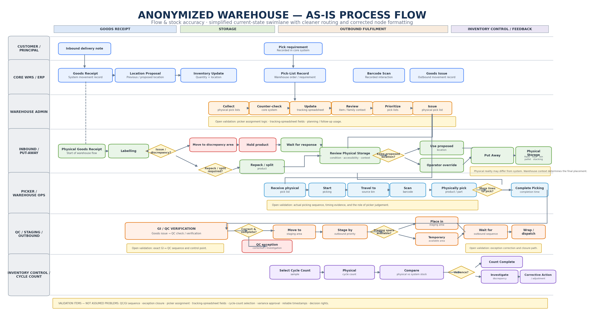

CASE STUDY 03 · INTERACTIVE
Warehouse Management System
Connecting recorded warehouse evidence with physical operating context. The public workspace uses examples to show why time-window stability and human context matter before a stock or location decision.
Architecture · Governance · Working Prototype
Zev’s contributionMapped evidence to reviewable checks and human decision points.
SystemInteractive decision-support prototype for operational review and process learning.
DemonstratesProcess analysis · decision support · validation · human control.
Intent → outcome
Find the few patterns worth a warehouse check without deciding what to move.
The system narrows evidence into a specific operational question. Warehouse context determines whether the finding is normal, actionable, or still uncertain.
EXAMPLE COMMAND
“Find the inventory patterns that need a warehouse review and tell me what evidence is missing.”
Returned outcome: a specific review case, supporting evidence, open question, owner, and a record of the later decision and result. Public cases are invented and stored in this browser.
Transformation objective
Can connected warehouse evidence support better operational decisions?
The objective is not a dashboard. The target is a useful operational decision with a measurable result.
The objective is not a dashboard. The target is a useful operational decision with a measurable result.
AS-IS process architecture
The current operating model spans goods receipt, put-away, Admin planning, physical picking, QC / staging / outbound and cycle-count control. System information and physical warehouse reality do not always contain the same context, so the analysis explicitly separates information flow from physical flow.

What remained to validate
The discovery work deliberately separated known process facts from validation questions.
Outbound / QCExact GI → QC sequence and control point; how picking and QC exceptions are corrected and closed.
Admin / PickingHow work is assigned to pickers and which tracking-spreadsheet fields are actually used for planning and follow-up.
Inventory ControlCycle-count selection logic and how variance moves from investigation to adjustment.
Data & DecisionWhich timestamps can reliably measure outcomes and which decisions belong to the operator versus the principal / customer.
These are validation items - not assumed problems.
Prototype scenarios
Three patterns make the review decision concrete
The examples below are invented for the public demo. They illustrate how an evidence layer can distinguish a stable pick face, sequential relocation between periods, and persistent multi-location activity without publishing private warehouse aggregates.
Stable concentrationHigh activity stays within an expected primary location; suppress a noisy alert and keep the pattern reviewable.
→
Temporal relocationLocations change between periods; ask about replenishment or layout history before classifying simultaneous dispersion.
→
Persistent dispersionActivity remains distributed within the review window; ask an operator about overflow, replenishment, or physical constraints.
Evidence boundary
Public prototype counts and case details are generated for this demo. No warehouse export, product identifier, operator record, order, or derived business aggregate is included.
Public prototype counts and case details are generated for this demo. No warehouse export, product identifier, operator record, order, or derived business aggregate is included.
What a useful finding must explain
Why it caught attentionShow the pattern that differs from comparable warehouse evidence.
Where / when to lookPoint to the relevant SKU, location and period so relocation is not confused with simultaneous dispersion.
What to checkConvert the signal into a concrete warehouse question rather than an automatic conclusion.
Worth checking does not mean something is wrong. The output is a specific check, not an automatic decision.
TO-BE decision model
The target operating model connects evidence to a human review loop rather than replacing warehouse judgement.

Human-in-the-loop design
Evidence→Human check→Decide→Measure→Learn
The system contributes
- pattern detection
- evidence comparison
- ranking / narrowing
- specific review questions
- case and outcome tracking
The warehouse contributes
- is this normal?
- why does it happen?
- what would you check?
- what information is missing?
- what action should happen next?
High Runner and QC
| Capability | System role | Human role |
|---|---|---|
| High Runner | Connect activity, order and location evidence; narrow many candidates to specific review findings. | Explain warehouse reality and decide whether to keep, investigate or act. |
| QC Check | Surface available QC evidence and frame what needs checking. | Confirm the real control point, exception path and final operational disposition. |
PoV delivery model
Validate→Build→Test→Decide
OperationaliseEnough evidence of operational value to move forward.
Close a specific gapValue exists, but a defined piece of evidence, context or workflow is still missing.
StopThe evidence does not support further investment.
Measurement before value claims
Select case → baseline → take action → measure result → prove value.
Operational improvement is measured first. Business value is discussed after evidence exists.
Operational improvement is measured first. Business value is discussed after evidence exists.
Interactive prototype
Working demo
The warehouse decision workspace uses invented stable-location, temporal-relocation, and persistent-dispersion scenarios. Each produces a different review question before human context is added.
The warehouse decision workspace uses invented stable-location, temporal-relocation, and persistent-dispersion scenarios. Each produces a different review question before human context is added.
The prototype also includes QC process validation and explicitly preserves unknowns instead of inventing the missing operating sequence.
Launch interactive prototype →